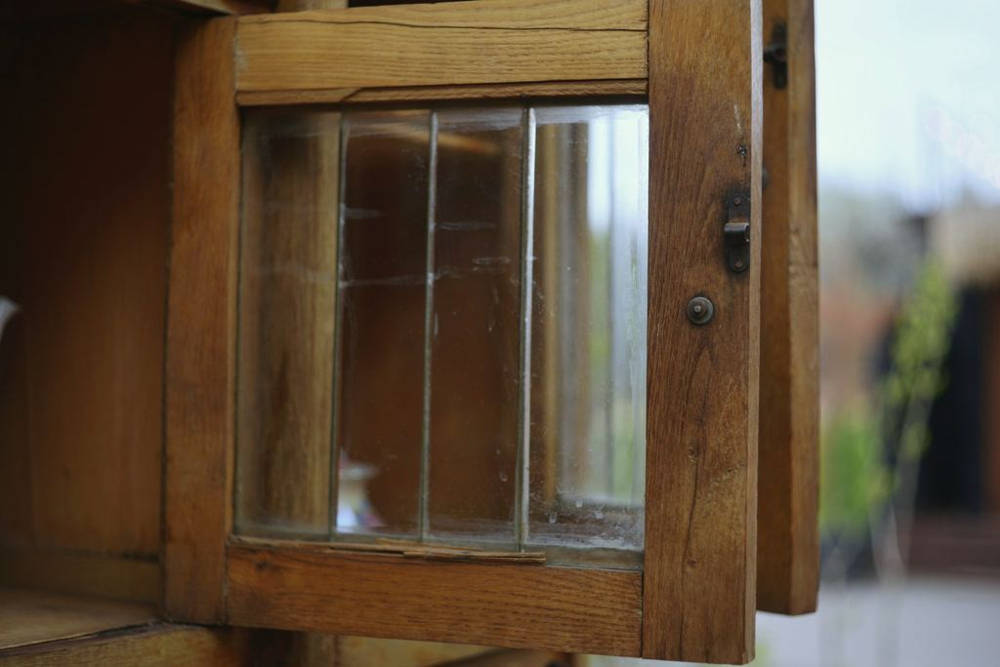

Kastenfenster-Flügel, aufgearbeitet
- Auftrag
- 25-047
- Bereich
- Restaurierung
- Ort
- Wien 13, Hietzing, 2025
- Maße
- 640 × 1.480 × 45 mm (Maße je Flügel, 28 Flügel)
- Holz
- Original Lärche, Ergänzungen Lärche
- Oberfläche
- Leinölfarbe
- Konstruktion
- Faules Holz am unteren Querholz ausgestemmt und mit eingeleimten Vierungen ersetzt, Glas neu eingekittet.
Sieben Kastenfenster aus einem Haus von 1908, jedes mit zwei inneren und zwei äußeren Flügeln, zusammen 28. Die Hausverwaltung wollte sie tauschen lassen, die Eigentümergemeinschaft wollte sie behalten.
Wir haben die Flügel ausgehängt, in der Werkstatt aufgearbeitet und nach drei Wochen wieder eingehängt. Die Fenster schließen wieder dicht, und die Fassade sieht aus wie vorher.